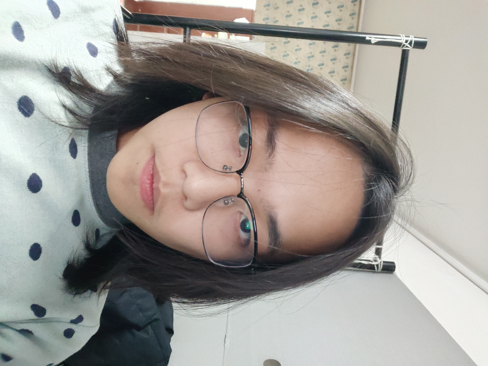
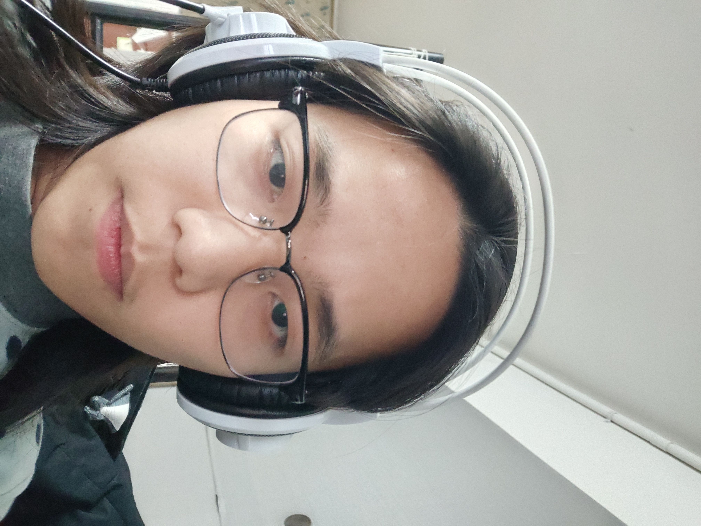

Introduce myself
As a web designer, I have a wealth of design experience and creative skills to provide users with a superior visual experience and interactive features. I pay attention to detail and user experience, and am adept at translating user needs into unique and attractive designs. At the same time, I have good communication skills and team spirit, and I am able to work with team members from different backgrounds to achieve project goals together. In past projects, I have successfully designed several influential and attractive websites, which have been well received by clients and users alike. I look forward to applying my design ideas and techniques to your project to create a memorable website for you.
 